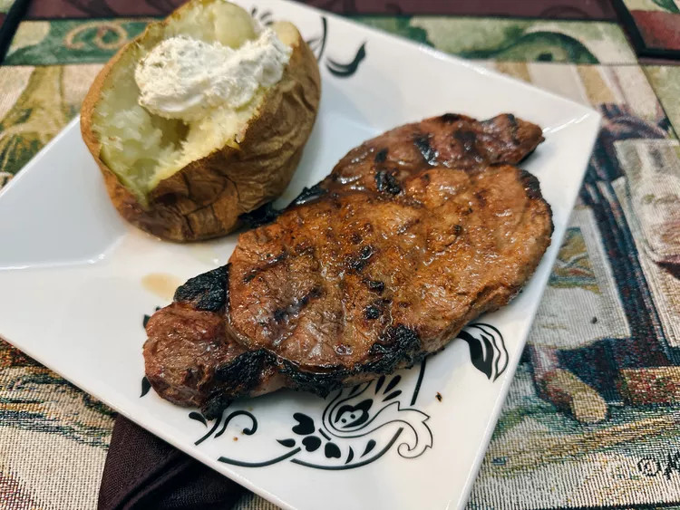

Grilled Ribeye Steaks

Description
This recipe shows my technique for grilling ribeye steaks, from marinade to grill marks.
Ingredients
- 1/2 lime, juiced
- 2 teaspoons carne asada seasoning
- 1 tablespoon olive oil
- 1 (8 ounce) boneless ribeye steak
Steps
- Combine lime juice, carne asada seasoning, and oil in a resealable plastic bag. Add ribeye steak, reseal the bag, and marinate in the refrigerator for 30 to 45 minutes.
- Drain marinade and allow steak to come to room temperature, about 30 minutes. Blot any excess moisture off the steak.
- Preheat the grill to 500 degrees F (260 degrees C), and lightly oil the grate.
- Place steak on the grill over direct heat. For rare: cook steaks until browned on the outside and red in the center, about 3 minutes per side. An instant-read thermometer inserted into the center should read 125 degrees F (52 degrees C).
- Remove steak from grill; rest 5 minutes before serving.